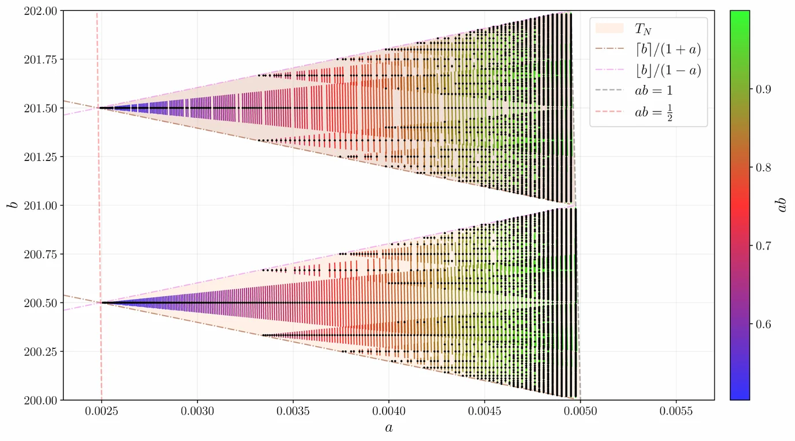

01 /
Frame theory & duality
Redundant expansions, stability, dual frames and frame constructions in finite- and infinite-dimensional spaces.
HILBERT SPACES · RECONSTRUCTIONResearch group · DTU Mathematics
We are HATA — Harmonic Analysis, Theory and Application, a research group at DTU Compute. We study how complex functions and signals can be understood through elegant, stable mathematical representations.
Fundamental mathematics. Structured representations. Real-world connections.
01 / WHAT WE DO
Frame theory is at the heart of our work. From abstract Hilbert spaces to practical signal representations, we explore the mathematics of decomposing, reconstructing and understanding information.
Redundant expansions, stability, dual frames and frame constructions in finite- and infinite-dimensional spaces.
HILBERT SPACES · RECONSTRUCTIONGabor systems, localization and the mathematical interplay of time and frequency in structured representations.
GABOR FRAMES · FOURIER METHODSWavelets, shearlets and generalized shift-invariant systems for structure across scales and directions.
SCALE · GEOMETRY · DIRECTIONOperator orbits, dynamical sampling and connections to approximation, inverse problems and signal processing.
SAMPLING · APPLIED ANALYSISMathematical foundations and theory of ML and AI, their applications, and their use in mathematics teaching.
APPLICATIONS · THEORY · TEACHINGIN FOCUS / FROM OUR PAPERS
The intricate geometry of the obstructions to the Gabor frame property for B-splines is surprisingly complex. The hyperbolic slits in the parameter plane reveal just how subtle the frame-set boundary can be.
Read the paper on arXiv
02 / RECENTLY AT HATA
Research, publications and occasional news from the group.
SOURCED FROM arXiv + DTU ORBIT · AUTOMATED
LATEST PAPERS
arXiv PREPRINT · math.FA
arXiv PREPRINT · math.CA
arXiv PREPRINT · math.FA
arXiv PREPRINT · ORBIT RECORD
OTHER NEWS
PHD DEFENCE · NTNU
PUBLICATION DIRECTORIES
Search HATA publications directly in arXiv and DTU Orbit. Orbit's combined search can miss records, so the researcher profiles below remain the most complete Orbit route.
03 / THE PEOPLE
The group brings together different perspectives on harmonic analysis, structured function systems and their connections to applied mathematics.
 01 / 03
01 / 03Professor
Frame theory · structured frames · Gabor systems · dynamical sampling
 02 / 03
02 / 03Associate Professor
Gabor analysis · wavelets · shearlets · frames · mathematics of ML & AI
 03 / 03
03 / 03Assistant Professor · Tenure Track
Gabor analysis · dynamical sampling · operator theory · structured frames · mathematics of ML & AI
ABOUT THE GROUP
HATA was founded in 2014 and is part of the Section for Mathematics at DTU Compute, Technical University of Denmark.
We welcome conversations about harmonic analysis, mathematical collaborations and research opportunities.
Explore Mathematics at DTU